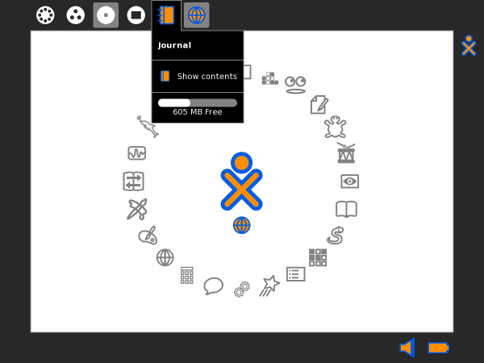
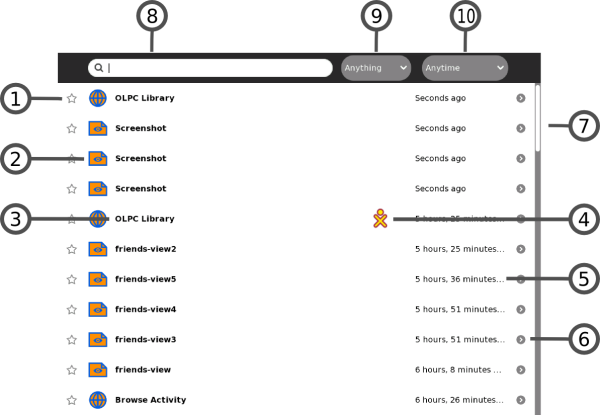
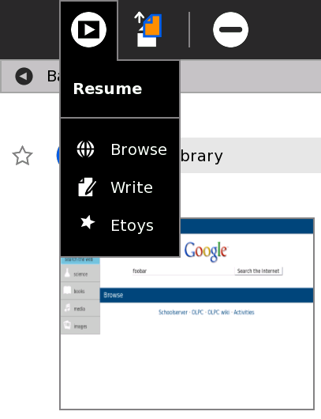
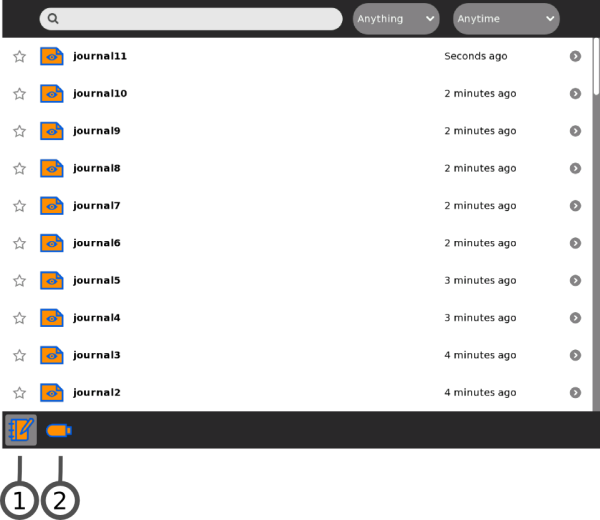
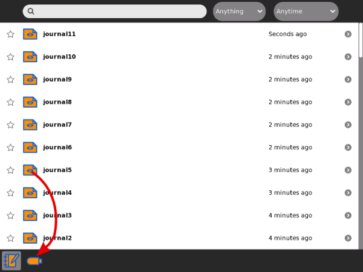
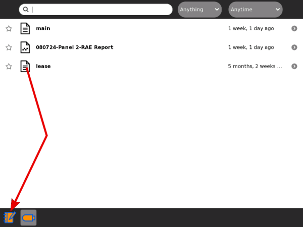
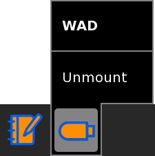

The Journal
The Journal Activity is an automated diary of everything you do within Sugar. Sugar Activities use the Journal as a place to save your work. You can use the Journal as a place to revisit old work, to resume incomplete work, to organize your completed work, and to reflect upon your progress as a learner.
The Journal keeps a record of what you do and the things your create such as photos, drawings, and writings. You can search for items in the Journal or sort entries by type or date. You can also click an entry to get a detailed view. You can resume an activity by clicking on the icon for that entry.
The Journal also supports external storage media such as a USB device or a SD card. When you plug a USB device into the XO, you can access the contents of the USB device using the Journal. Click the USB icon to see the content on an attached USB storage device. You can also copy information from the Journal onto removeable media—such as a USB device—as a means of backing it up. If you are connected to a school server, you can access its backup system.
Showing the Journal

To show the Journal, click the Journal icon on the Frame.
On an XO laptop, you can press the magnifying glass key in the top row of the keyboard to immediately open the Journal and search.
Journal features

The Journal View contains a menu and a list of journal entries:
- 1. Star
- You can mark important entries by clicking on the star icon for that entry. When you click the star icon, the star is colored in. Normally, when the Journal becomes too full, the system deletes some entries. If an entry is starred, it is never deleted.
- 2. Icon
- Each Journal entry has an icon. The color of the icon shows who created the entry. For example, if you copy a photo from a friend, the photo's icon has your friend's colors.
- You can launch the Activity for the entry by clicking on the icon.
- A hover menu may reveal additional options. In particular, "Erase" deletes that entry from your Journal.
- Caution: "Erase" deletes any data associated with the entry shown. For example, if you delete an entry that shows that you installed an Activity, you delete the Activity as well.
- 3. Entry name
- Each entry has a name. You can edit the name by clicking it. If the Journal view is showing the contents of a removable storage device, the Linux file name is shown here, with the path and the file name extension stripped off.
- 4. Buddy icons
- If other participants joined you in this Activity, icons in their colors appear here.
- 5. Elapsed time
- The time since the most recent change to the entry is displayed.
- 6. Detail view button
- Click this button to see detailed information about the entry. See "Journal detail view", below.
- 7. Scroll bar
- When there are more entries in the Journal than can fit on the screen, you can use the scroll bar to scroll through them.
- 8. Search box
- Type words in the box to search for entries that match those words. Entries are displayed when they contain all of the typed words. Comparison will be against all of:
- the entry name field
- the description field (see "Journal detail view")
- the tag field (see "Journal detail view")
- 9. Select by type
- Choose an entry type to display only entries of that type. Types include the Activity that created an entry, or the object type, such as, picture, sound, text, and so on.
- 10. Filter by date
- You can limit the Journal View to entries made within the past day, week, or month.
Journal detail view

The Detail view appears when you click the Detail view button for an entry. This view lets you examine and annotate the entry.
- 1. Back icon line
- You can click anywhere in this line to return to the main Journal View.
- 2. Star and Icon
- These items duplicate their functions on the main Journal view - a star represents a special, never-deleted Journal entry and the icon color indicates who created it originally.
- 3. Thumbnail image
- Each entry has a thumbnail image that is created automatically. The image show the Activity screen when the last change to the Journal entry was saved.
- 4. Entry name
- You can change the name of the entry by clicking it and typing in a new name.
- 5. Elapsed time
- Displays the time since the most recent change to the entry is displayed.
- 6. Description field
- You can type a description of the entry, which you can find later using the Search box. Use a description to remind you of what you did. For example: "Flowers I saw on the hike to the waterfall".
- 7. Tag field
- You can enter search tags. Use keywords to describe a journal entry so that you can find it later using the Search box. You can use keywords to help you "group" this entry, for instance by origin or context.
- 8. Participants
- Displays the XO icons of each person who participated in a shared Activity.
- 9. Resume button
- You can click the Resume button to resume an Activity. A hover menu may show additional options. For example, you can resume working with an image using either the Browser or the Paint Activity.
- 10. Copy button
- You can copy a Journal entry to the clipboard (or to one of the removable storage devices shown on the bottom edge of the Journal screen) by clicking on the Copy button.
- 11. Erase button
- You can erase an entry by clicking the Erase button.
- Caution: Once you erase an entry, it cannot be restored unless you have backed up your Journal.

When resuming from the Detail View, you can choose among different Activities.
Using removeable media

When you insert removeable media—such as a USB device or SD card—it appears as an icon on the bottom edge of the mail Journal view.
- 1. Journal
- Click the Journal icon to shows the Journal View.
- 2. USB device
- Click the USB icon (or SD icon) to show the removeable-media file system.


You can drag Journal entries onto the USB device. You can drag entries back from USB device back to the Journal.

To remove (unmount) the external file system, choose Unmount on the hover menu.
Caution: It may take time for the hover menu to appear. It is easy to make a mistake and click the icon itself when you intended to click Unmount.
Caution: If you have a Terminal running you may inadvertently have your removeable media locked. The safest way to remove media is after powering off your computer.
Note to parents and teachers
The Journal keeps a record of everything a child does within Sugar: which Activities they use and what content they create. It also keeps a record of group Activities, such as participation in a shared Write or Browse session.
The Journal encourages reflection. You can refer to it to assess a child's progress, much in the spirit of "portfolio" assessment. You can also use it as a catalyst for discussion with your child or student. We encourage the use of the description field within the detail view of Journal entries as a place to annotate or comment up entries.
Author : TheJournal
© Walter Bender 2008
Modifications:
adam hyde 2008
Anne Gentle 2008
David Cramer 2008
David Farning 2008
Janet Swisher 2008
Janis Grinbergs 2008
TWikiGuest 2008
License : General Public License
Produced in FLOSS Manuals (http://www.flossmanuals.net)